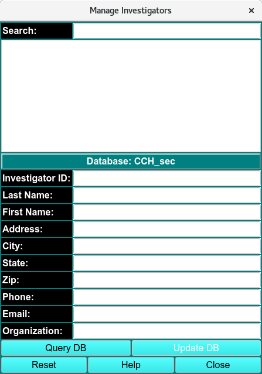
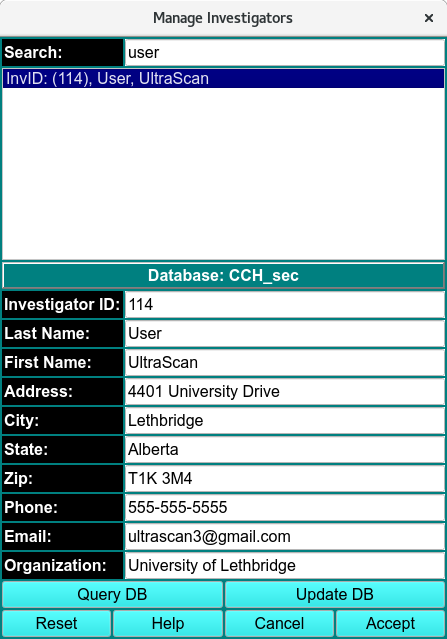

Managing Personal Information¶
Using this window, you can update any personal information. Your database authorizations must allow update privileges for the record being changed.

Manage Investigators Empty
Step 1: Use Query DB to get a list of persons in the current database.
Step 2: Entering text in the Search window narrows the number of entries visible in the list of personnel available for selection.
Step 3: Double-clicking on the name of the investigator will populate the line edit windows to allow viewing and changing personal data.
Step 4: Change any data desired.
Step 5: Use Update DB to commit the changes to the database.
Step 6: Use Accept to pass information back to the calling program and close this dialog or Cancel to simply close without changing the investigator data of the caller.
Note
Depending upon how the window is initiated, the Cancel button may be labelled Close with no Accept button present.

Manage Investigators Filled out